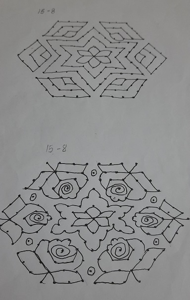
1)This Rangoli is a symmetrical one. The Rangoli’s center is a depiction of a flower. Which, like the rest of the rangoli, is symmetrical. The Rangoli is made of a number of diamonds. The dots upon which this rangoli is made is a 15-8 dot arrangement.
2)This rangoli is more towards the pattern and floral motifs. The outer-periphery is made of rose-like designs, which are made of multiple shapes. Shapes such as, triangles and straight lines. The entire Rangoli is Symmetrical.
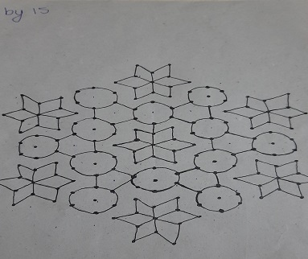
This rangoli is made up of shapes like circles, diamonds and triangles. The entire outer and base shape in this rangoli is a hexagon; the six-sided polygon. Within this hexagon shaped Rangoli, multiple triangular shapes are put together to form more hexagons. The seven flowers are placed in the center and corners of this rangoli. All these flowers are made of diamonds, or multiple triangles put together.
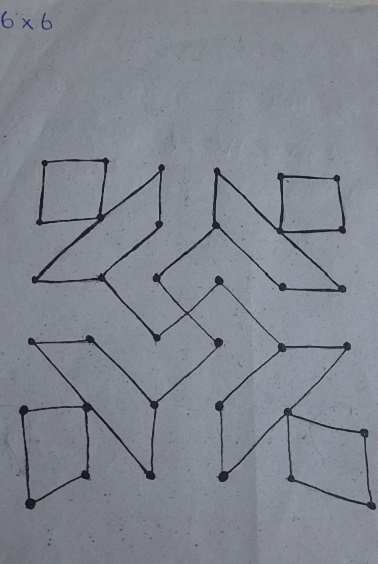
This rangoli is made up of trapeziums and squares together to create the four sides. The center connects them all; an 'x' or '+' sign. This also symbolizes the swastika. this rangoli is built on a set of 36 dots, all arranged into a six by six square.
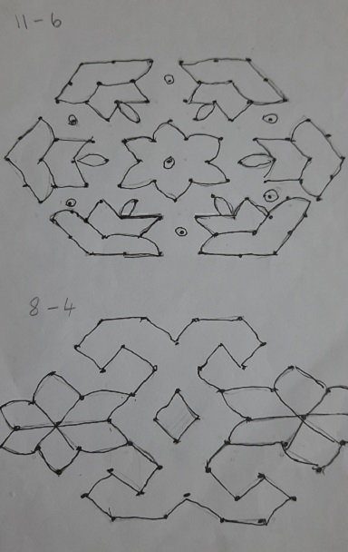
1)This rangoli is symmetrical and is shaped like a hexagon, which is also symmetrical. The shapes used to make the diyas are two parallelograms which are connected. The flame is made out of a leaf-shaped silhouette. The flower in the center has to be symmetrical as it is the heart a symmetrical rangoli.
2)This rangoli is symmetrical. The two flowers are exactly opposite, as they should, judging from the fact that this rangoli is symmetrical. The center is a diamond, while surrounding it is a compilation of shapes, all connected together. the shapes are squares, rectangles and triangles. The line in the center is built on a row of 8 dots, while on either side the number of dots descends to 4.
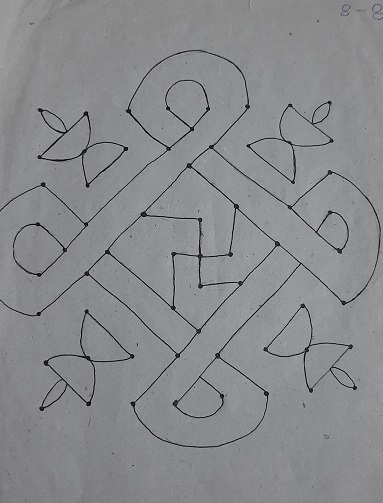
A very simple dot pattern of an 8-8 square is the base of this design. Symmetry is a key part of this design. The design has many geometrical shapes such as semi-circles and squares. To some, this design is in the shape of a square and to others, a diamond. This brings out the fact that a square looked at from an angle looks like a diamond and vice versa.
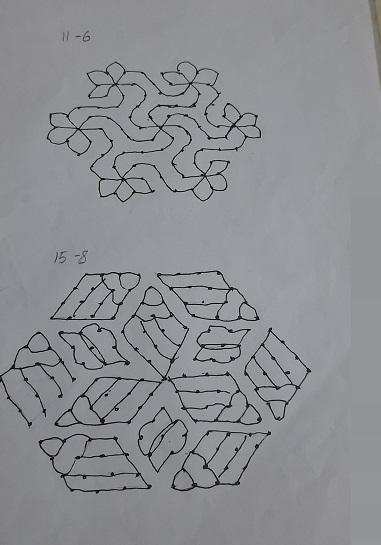
Around the outer-rim of this rangoli, there are half built flowers, which are asymmetrical. yet, the whole rangoli is symmetrical. The pattern of dots used are in this order: 11 in the middle, which then descends to 6 on either side.
This rangoli is a symmetrical one, because of on slating line. Although, most rangolis are symmetrical, this one's charm is just the same. the multiple lines in all angles, cause an illusion, that increases the visual pleasantness. All the line that beautify the rangoli are layered on the inside of multiple diamonds. which, when put together, form a hexagonal shape.
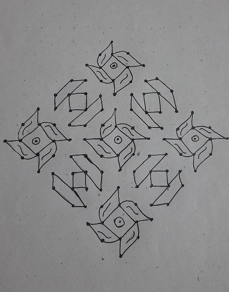
The base of this Rangoli is an 8 by 8 square, 64 dots in total. Symmetry is almost a key to this Rangoli, even the multiple aspects of this rangoli are symmetrical. The shapes present are squares, circles and trapeziums; all which are symmetrical. This rangoli is a repetition of two patterns, placed about to look pleasant to the eye. one being a trapezium-square duo, and the other being a square, circle and leaf-like shape.
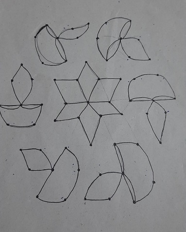
This is a classic diya and flower rangoli. And although simple, they contain semi-circles, diamonds and triangles. The center of the Rangoli is a flower, and the outer circle is made of six, lit diyas. The diyas consist of the semi-circles. The fires lit on the diyas, are no exact shapes, but vaguely represent diamonds, or ovals. yet, neither is defined or accurate.
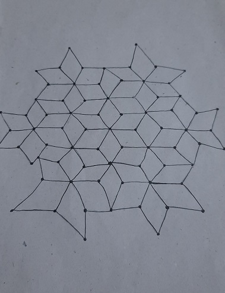
Almost the only shape visible in this Rangoli is a diamond. The diamonds are all over, but you can see rather clear patterns such as flowers. They form a hexagon, excepting the fact that around the edges, a clear flower is represented.
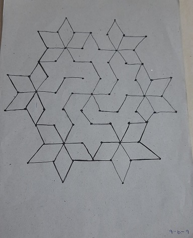
This Rangoli is a series of diamonds surrounding a pattern in the center. This pattern is made of lines, which in turn create multiple angles. Between these angles, the ones that are opposite to each other don't need any measurements, to prove that they are equal.
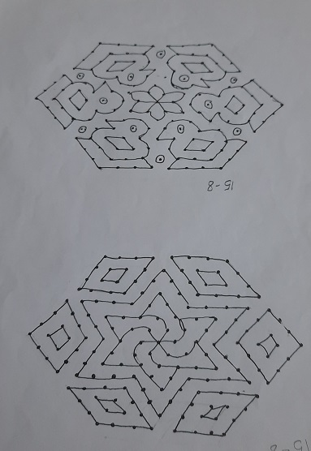
The rangoli is symmetrical and represents a hexagon. The outer layer depicts birds. These birds are made of triangles, circles, rectangles and trapeziums. The center is a symmetrical flower, with slightly diamond-like petals. The dot pattern upon which this depiction is made is a pattern in which the line in the center is 15 dots. Then the number of dots in a line descends to an 8.
The rangoli is symmetrical. The entire round on the outside is made of diamonds. These diamonds are filled with smaller diamonds. These shapes, themselves, are symmetrical, let alone the entire rangoli.
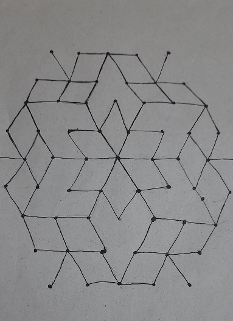
This whole rangoli is made entirely of diamonds. All these diamonds are and may be different sizes, but they still add to the rangoli. They add in terms of the decoration and in terms of the shapes and patterns involving geometry.
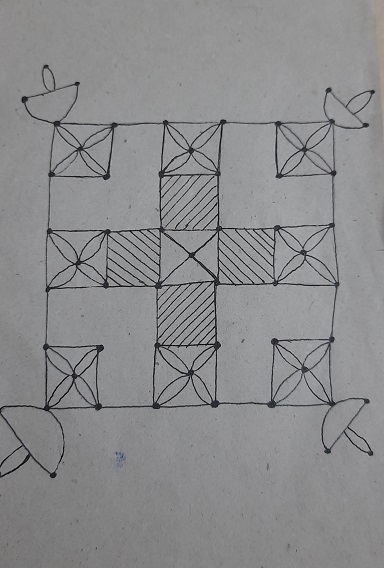
This rangoli is new and unique. It is based on the 5 by 5 square dot pattern;25 dots. The patterns are all floral based, adorning the base shape of the design; a square. The outline is a square, inside which the plus sign is shown with the use of multiple squares.
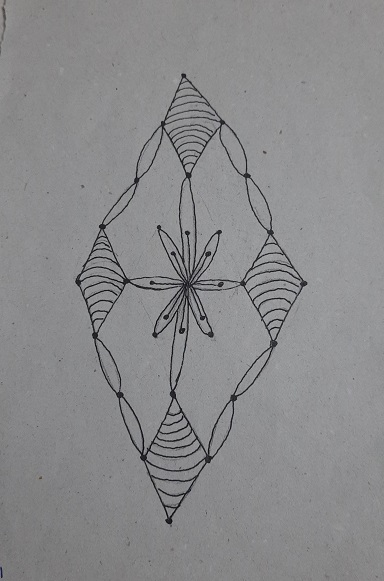
This rangoli is based on two shapes ovals and diamonds/squares. This is an original design which has a dot pattern of 1,2,3,5,7,5,3,2,1. The center part is a flower made with ovals which connect to the four diamonds.
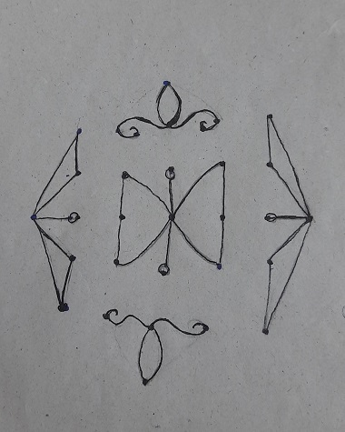
This one design has a rather complicated dot pattern. It starts with 1 dot in a line and then two rows of 5. The row in the center is of 7 dots. the following two consist 5 each and the last one has 1. This design is mostly based on the floral side of rangolis, but still has geometrical shapes, one such shape is a triangle. The triangle is an isosceles triangle, where two sides are equal.
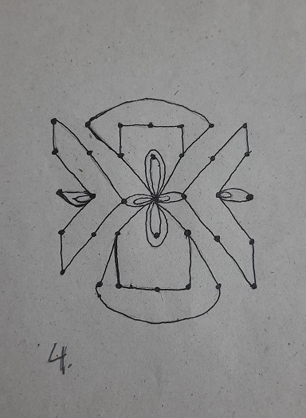
This rangolis dot pattern is a 5 by 5 meaning it is a square, a square of 25 dot. This rangoli unlike the previous ones consists of pentagons. The flower just like many rangolis is based on an oval. There are two ovals in each other forming a petal. The rangoli could consist of many other shapes like triangles, rectangles and more if there were lines to simply divide them.
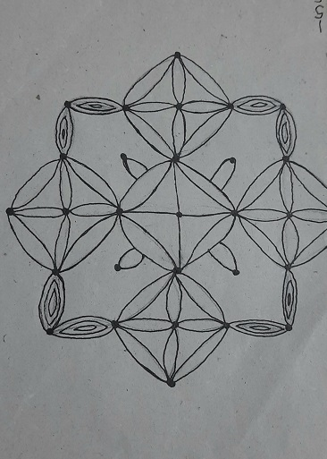
This rangolis dot pattern like many has a repeating sequence which is 1,5,5,7,5,5,1. It consists of two main shapes one, a square and two, circles. The rangolis main shapes are formed by one shape, ovals. Either there are placed one inside of another or set in such a way that they look like circles or flowers.
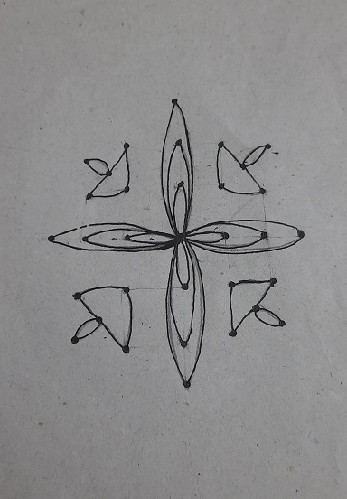
This is a basic flower design with diyas. The dot pattern starts off as 1 dot in a row. Then increases until 7 and decreases back to 1. The floral design in the center is based on three different sized ovals. Each one is in the other oval on all four sides. These diyas are not based on semi circles and ovals but on triangles and ovals.
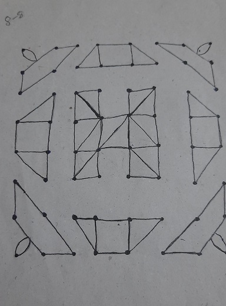
This design has multiple quadrilateral polygons such as squares and trapeziums. These polygons have been divided into triangles. This interesting rangoli is made from simple shapes and has 64 dots to form an 8 by 8 square.
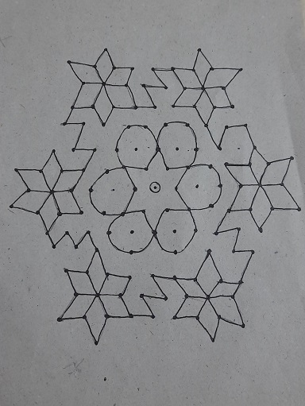
Circles and diamonds a classic combination to form a rangoli. The dot pattern is a 13 by 7. The rangoli takes a turn when it has lines and angles that are both acute and obtuse. The diamonds are placed in a hexagonal form to look like flowers. The circles are placed right under the flowers which form a hexagon.
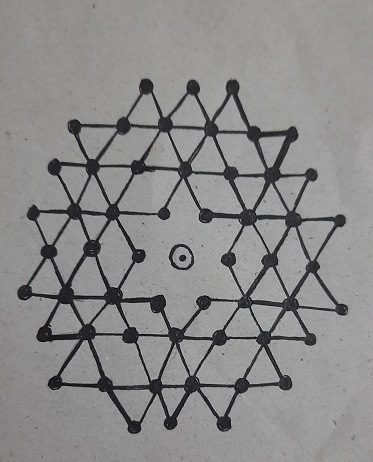
This rangoli is fully based on symmetry and angles. The angles that you can find are acute obtuse and reflex angles. These angles when closely looked at form two shapes. They form triangles and rhombuses.
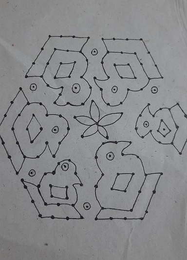
This is symmetrical rangoli. The two sides are the exact same. The dot pattern has 15 dots in the center row. Then it decreases to 8 on either side. It depicts birds, through these depictions, the geometrical shapes such as squares and rectangles are carried forward.